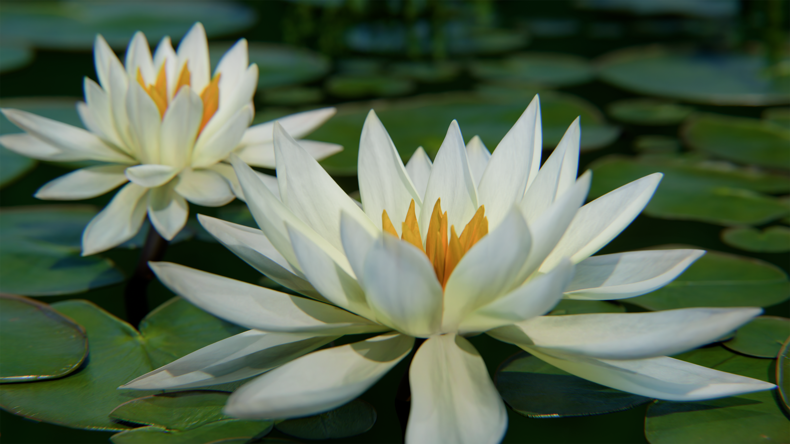

3D Artist · Botanicals · Beauty
Gardens that never were, rendered real.
I'm Irma Andersson. I create botanical scenes and beauty visuals where nature drifts into the dreamlike: petals, dew and light, just a little more than real.
01 — Featured work
Renders
Drag the slider to compare the colour and mono versions, then browse the rest of the work in the portfolio.

ColourMonoWater Lilies
Botanical · colour & mono
Water Lilies
Botanical · colour & mono
Water Lilies
Botanical · colour & mono
02 — About
Rooted in nature,
drawn to the dreamlike.
For eight years I've been building small, quiet worlds: water lilies at first light, dew on a snowdrop, a perfume bottle resting in folds of fabric. I'm drawn to the places where nature and beauty meet, and I care about light, texture and the tiny details that make an image feel real, then lift it somewhere a little more magical.
03 — Services
What I do
Botanical Scenes
Flowers, foliage and water, sculpted and lit with a naturalist's eye.
Beauty & Product
Skincare, fragrance and cosmetics, set in soft, luminous worlds.
Light & Materials
Dew, petals, glass and silk: surfaces that feel close enough to touch.
Gentle Motion
Blooms unfurling, bubbles drifting, light slowly shifting through a scene.
04 — Contact